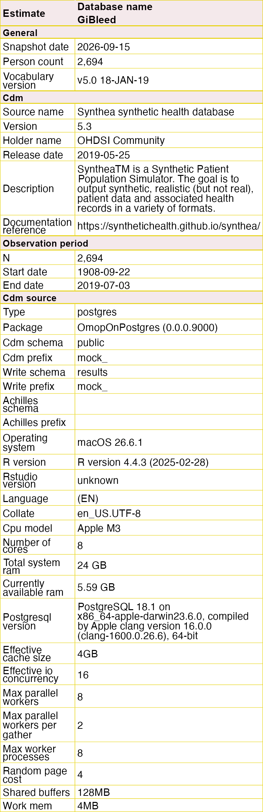

The goal of OmopOnPostgres is to facilitate working with data in the OMOP CDM format using a PostgreSQL database. The package:
- Supports multiple database clients: Provides flexible approaches for connecting from R to PostgreSQLs.
-
Simplifies database management: Facilitates the creation, deletion, and management of OMOP CDM schemas and tables directly from
-
Ensures cross-platform compatibility: Enables analytic R packages to reliably use
dplyr/dbplyr, supporting cross-platform network studies. - Enhances performance: Allows for PostgreSQL-specific optimisations of analytic queries.
Supported drivers
| Driver | Status (Ubuntu / macOS / Windows) |
|---|---|
| RPostgres |
|
| ADBC |
|
| ODBC |
|
| DatabaseConnector |
|
| DuckDB |
|
Installation
You can install the development version of OmopOnPostgres from GitHub with:
# install.packages("devtools")
devtools::install_github("ohdsi/OmopOnPostgres")Example
library(OmopOnPostgres)
library(OmopSketch)
cdm <- mockPostgresCdmReference(client = "RPostgres",
datasetName = "GiBleed")
#> ℹ Loading bundled GiBleed tables from package data.
#> ℹ Adding drug_strength table.
#> ℹ Creating local <cdm_reference> object.
summariseOmopSnapshot(cdm) |>
tableOmopSnapshot(type = "flextable")